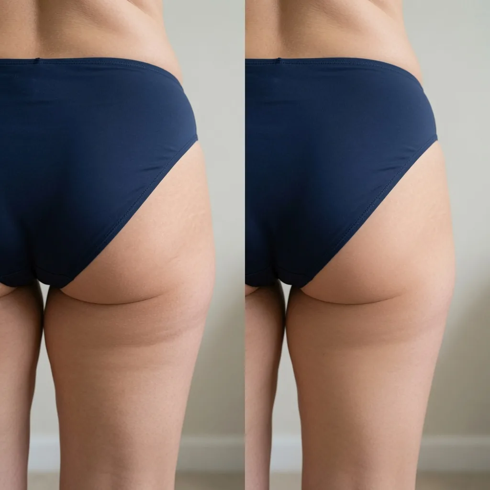

Special Report · The Brazilian Fix For Cellulite & Stretch Marks
“Her Skin Was Smoother At 54 Than Mine At 40”: The 60-Second Brazilian Ritual That Fades Cellulite & Stretch Marks
American women hide cellulite and stretch marks that a simple Brazilian ritual was built to soften. One 46-year-old mom’s account — and the dermatology US brands never told you about.
If you’ve spent years hiding cellulite and stretch marks under a sarong — and quietly priced a $12,000 surgery you don’t really want — read this before you book anything.
American women are financing $12,000 surgeries to soften cellulite and stretch marks a simple Brazilian ritual was built for — and the only reason you’ve never heard of it is that US brands quietly skipped the entire category.
I know how that sounds — two months ago I’d have rolled my eyes too. But I’m 46, I hid my body for six years, and a cousin from Rio changed my mind in one afternoon. Here’s exactly what happened.
Last month, something happened at a pool party that I still can’t stop thinking about.
My cousin Lorena flew in from Rio. She’s 54 — eight years older than me. She walked out in a swimsuit, turned to grab a towel, and I actually did a double take. Her skin was smooth. No cottage-cheese cellulite on the backs of her thighs. No stretch marks across her hips. Nothing that looked like the back of my legs in the changing-room mirror.
I’m 46. For six years I’ve wrapped a sarong around my waist the second I stand up. Angled out of every beach photo. Kept the bedroom lights off. And there was my cousin, almost a decade older, walking around the deck like she owned it.
So I did the thing you’re not supposed to do at a party. I pulled her aside and asked, quietly, “Lorena… what are you doing?”
She laughed and said: “Querida, it’s 60 seconds a day. Every Brazilian woman does it. You just never learned.”
What she showed me sent me down a two-hour Google hole — and once a dermatologist explained the actual reason my skin looked the way it did, I was equal parts relieved and furious that I’d wasted six years.
Show me what she used →Six Years Of Hiding — And I Told Myself It Was Normal
I want to be honest about how bad it got, because if you’re still reading, you probably already know the feeling.
It wasn’t just the mirror. It was turning down a beach weekend with my husband and blaming “work.” It was buying the one-piece with the “tummy AND thigh control.” It was standing in the fluorescent light of a fitting room, twisting to see the back of myself, and physically flinching.
It was my husband reaching for me in the dark and me reaching for the light switch first. Not because he made me feel that way. Because I did.
And it was my daughter — seven years old — asking why I never got in the pool with her. I told her I “didn’t feel like swimming.” She believed me. That one still stings.
Here’s the part I’m almost embarrassed to admit: I’d decided this was just what 46 looked like. That my body had “had its run.” That firm, lifted skin was for 25-year-olds and women who won the genetic lottery. I wasn’t sad about it every day. I was something worse. I had accepted it.
The $12,000 Chair I Almost Sat In
Before Lorena, I’d gotten desperate enough to sit in a plastic surgeon’s office for a BBL consult.
Twelve thousand dollars. Weeks face-down on a special pillow. No sitting normally for a month. My friend Dana went through with hers — and spent six weeks sleeping on her stomach and sitting on a foam donut at the dinner table. She looked great eventually. But watching what she went through scared me more than the mirror did.
And here’s the thing nobody in that office tells you: a BBL doesn’t firm your skin. It adds fat under skin that’s already lost its structure. If the surface was dimpled and loose before, it can end up dimpled and loose over a bigger bottom. I didn’t know that yet. I just knew $12,000 and a month face-down felt insane for something I wasn’t even sure would work.
I walked out. And I went back to what I’d already been doing for years — which was throwing money at the problem in smaller, quieter amounts.
Everything I’d Already Wasted (I Actually Added It Up)
When I finally sat down and totaled what I’d spent trying to fix this, I felt sick:
- Squats — months of them. My legs got stronger. The dimples on top? Didn’t move a millimeter. (Now I know why. More on that in a second.)
- Drugstore “firming” lotions — six of them. Water and fragrance. Gone by the next shower. ~$180.
- A “cellulite” massage package at a spa. Felt amazing for a day. My wallet cried. My skin didn’t change. $220.
- Dry brushing, cupping, a $90 “ice roller,” a coffee scrub off Instagram. A drawer full of hope. ~$150.
- The BBL deposit I almost put down. $12,000 I nearly financed.
Here’s what nobody told me in all those years: the real problem was never willpower, and it was never the fat.

What A Dermatologist Finally Told Me — And Why It Made Me Furious
When I got home I did what any skeptical 46-year-old does. I Googled for two hours. And I found a dermatologist’s explanation that made everything click — and honestly made me angry that I’d wasted six years.
Cellulite and sag aren’t a “fat problem.” They’re a connective-tissue problem.
Under your skin there are bands of fibrous tissue — the ones dermatologists call septae — that anchor your skin to the muscle. When you’re young, they’re elastic and everything sits taut. With age, hormones, and weight changes, those bands stiffen and shorten. They pull down in spots. The fat between them pushes up through the gaps. That push-and-pull is the dimpled, mattress-look texture you see in the mirror.
• Squats build the muscle underneath the broken layer. The dimples sit on top of the muscle. You can build a shelf and still have the same texture on it.
• Lotions hydrate the surface — the very top. They never reach the middle layer where the septae actually live.
• A BBL adds fat on top of the same broken layer. New volume, same structural problem.
You weren’t lazy. You weren’t “too far gone.” You were aiming at the wrong layer with every single tool you were handed.
So the real question becomes: what actually reaches that middle layer? And that’s where the Brazilian part comes in.
In a 2025 peer-reviewed study (Cosmetics, MDPI), a topical caffeine cream-gel massaged into the thighs and buttocks of 56 women (avg. age 42) produced significant reductions in cellulite and skin indentation over 8 weeks — and the improvement kept climbing week over week. A separate 2026 randomized, double-blind trial (Pharmaceutics, MDPI) backed it up, with graded cellulite scores dropping over 12 weeks. These studies evaluate the ingredient class — the caffeine/guaraná family — not this specific product. Individual results vary.
Read that again. Not a magic bean. Not a “detox.” A caffeine active with actual trials behind it, used the way Brazilian women have always used it — massaged deep, every single day, for about 60 seconds. The mechanism is almost boring. That’s exactly why I believed it.
Check availability →The Category American Women Were Never Sold
This is the part that made me genuinely angry.
In Brazil, this class of product has a name — modelador — and women have used it daily for 30 years. It’s not exotic there. It’s as normal as sunscreen. It’s in every bathroom.
In America, we were never sold that category. We were sold “firming lotion” — a totally different, watered-down thing — because the stronger, contour-focused version bumps up against how cosmetics are legally allowed to be marketed here. So the shelves filled up with $120 jars of scented water that sit on the surface and do nothing, while the actual working category quietly stayed behind in Brazil.
We didn’t fail at fixing this. We were handed the wrong tool — and told it was the only one that existed.
Until recently, if you wanted the real thing, you basically had to fly to Rio or know a woman who did. Lorena’s exact one is a Brazilian cream called Bumbum — a guaraná modelador, now blended in the USA so it clears customs and lands on your doorstep. She texted me the link before she flew home. I stared at it for three days before I ordered.
Why I Almost Didn’t Order It (And Why I’m Glad I Did)
I’ve been burned before, so I went looking for the catch. What actually got me to try it: it doesn’t stop at one active. It stacks the concentrated guaraná with two other Brazilian ingredients, each one covering the last one’s weakness.


Guaraná tightens — but tight skin still needs to be fed, so they add cupuaçu butter to hydrate the crepey, deflated look. Then Amazonian açaí — studied for its effect on the enzymes that break down collagen and elastin — to defend the skin from the daily breakdown that leaves a bottom looking flat. Most creams stop at one watered-down active. This one layers three, each with a job.
And the thing that finally got me over the line: a 180-day money-back guarantee. Firmer, or every penny back — even on an opened, half-used jar. So I did the math. One jar to test the water, or the multi-jar kit for the full cycle at the biggest discount. Lorena said, “Buy the three. Trust me — nobody sees it in two weeks and nobody quits after they do.” I bought the three.
My 90 Days (I Kept Notes, Because I Didn’t Believe It)



More readers over a 6–12 week daily ritual. Individual results vary; not typical.
See a real customer, unfiltered — how she applies it in about 60 seconds:
“I’ve Tried Everything. Why Would This Be Different?”
I asked Lorena the exact same thing. Fair question. So let me answer the doubts I had — the real ones, the ones I almost let stop me — the way she answered mine.
Here’s the honest expectation-setting, because I won’t insult you: this is not overnight, and it is not surgery. It’s a daily ritual that women report following this rough timeline:
That’s why the women who actually see it through order 2–3 jars and finish the full cycle — instead of quitting at week two, right when the skin is about to turn.
Where Rachel Got It
Bumbum doesn’t sit on a shelf next to the designer jars — it ships direct from the brand, and it’s the same guaraná modelador Lorena has used for years. What finally made me comfortable trying it was the 180-day money-back guarantee: firmer, or every penny back — even on an opened, half-used jar. The risk sits with them, not with you.

Because it’s small-batch and blended in the USA, it does sell out — Lorena warned me hers was on backorder once for three weeks. If it’s in stock when you check, I wouldn’t wait and hope it’s there next week.
Real Women, Real Results
My Advice, Friend To Friend
Six months from now you’ll be one of two women.
The first is still wrapping the sarong. Still angling out of the photo. Still reaching for the light switch. Still telling her kid she “doesn’t feel like swimming.” Nothing changed, because nothing changed.
The second one gave it 60 seconds a day — and got in the pool.
The only thing standing between them is a decision you can make in the next 90 seconds — while it’s in stock and the 180-day guarantee keeps every dollar of the risk on them, not you. I waited six years to try something that costs 60 seconds a day. Don’t be me. Start today.
Check availability →One-time purchase · no subscription · free US shipping · 180-day money-back guarantee
Advertisement. This page is a paid advertisement, not a news article or editorial content. “HealthWire” is a content brand used for this advertisement and is not a news organization; it is not affiliated with any news outlet. This page reflects one customer’s personal experience shared with the brand. Bumbum is a cosmetic product for the appearance of skin firmness. It is not a drug and is not intended to diagnose, treat, cure or prevent any condition, and is not a substitute for surgery or medical treatment. It is not affiliated with, endorsed by, or a replacement for any surgical or injection procedure. Any research referenced evaluates individual ingredients (the caffeine/guaraná class), not this finished product, and is not independently verified here. Statements regarding the product have not been evaluated by the FDA. Individual results vary and are not guaranteed; testimonials and before/after images reflect voluntary individual reports and do not represent typical results. Consult a qualified professional for any skin concern.